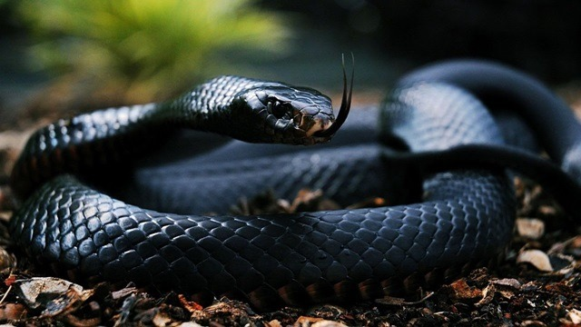

Site Principal
Praias Lindas
Futebol
Cobras

Titanoboa
Era um “monstro” que chegava a 14 m de comprimento,
1 m de diâmetro e 1,5 tonelada. Capaz de engolir um crocodilo inteiro,
o réptil teria surgido após a extinção dos dinossauros, há 58 milhões de anos...
Anaconda gigante
A palavra cobra ou serpente já é o suficiente para assustar muitas pessoas,
e se tratando desses répteis devemos tomar muito cuidado.
Alguns desses animais alcançam tamanhos assustadores podendo ultrapassar os 3 metros fácil.
Coral
De cores vivas, os anéis vermelho, preto e branco tornam a cobra-coral uma
das serpentes mais conhecidas. A dificuldade para se camuflar dificulta os acidentes com
a espécie, ponto positivo já que o veneno é um dos mais ativos no ser humano.

Cascavel
A cobra cascavel é uma serpente peçonhenta dos gêneros Crotalus e Sistrurus.
Possui espécies em todo o continente americano e é extremamente comum por aqui,
no Brasil.

Mamba Negra
Um animal cuja picada pode matar um ser humano adulto em cerca de 20 minutos
é digno de ser temido, não é? Principalmente quando incluímos nesse pacote os
troféus de serpente mais venenosa da África e cobra de locomoção terrestre mais
veloz do mundo. Estamos falando da mamba-negra, uma das serpentes mais perigosas
que existem e objeto de inspiração para diversos mitos africanos.